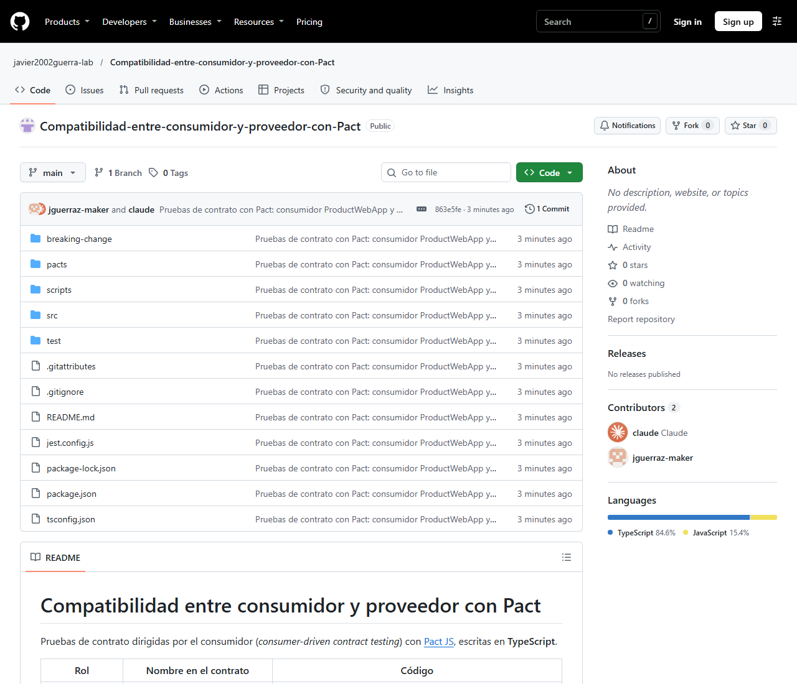
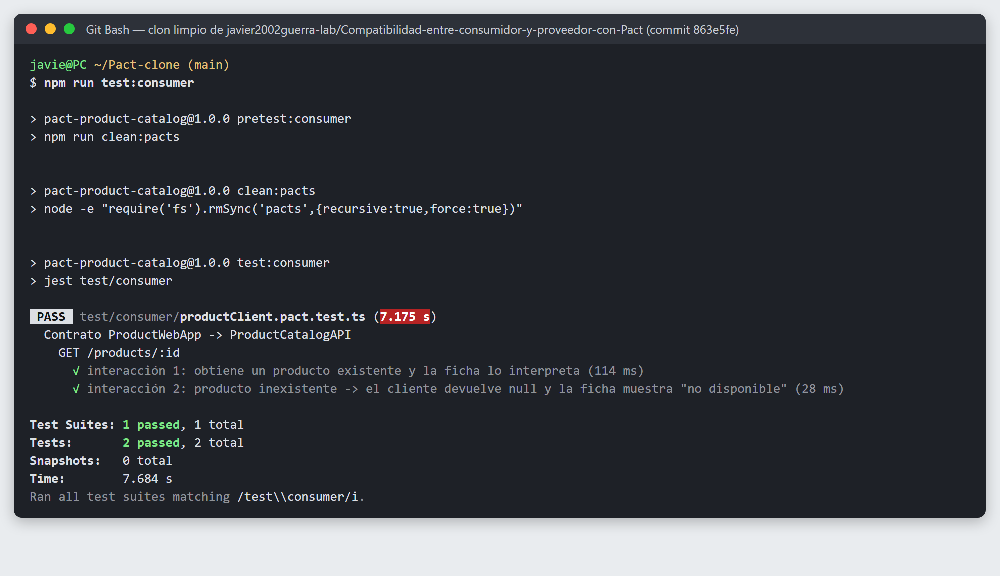
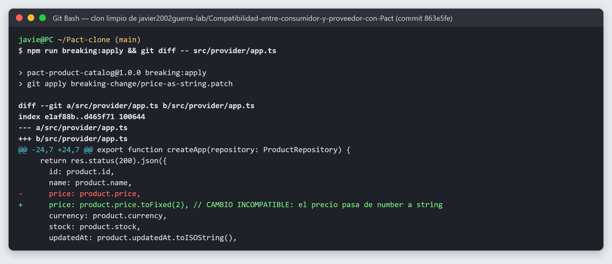
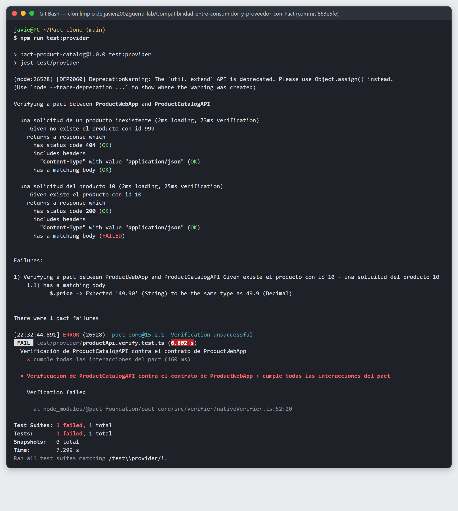
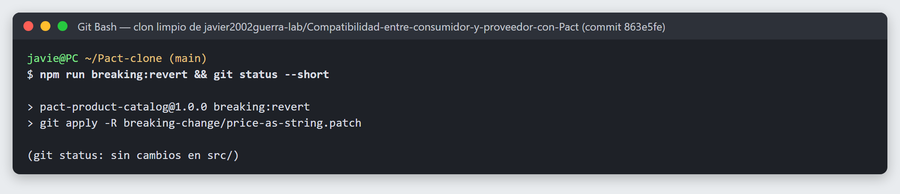
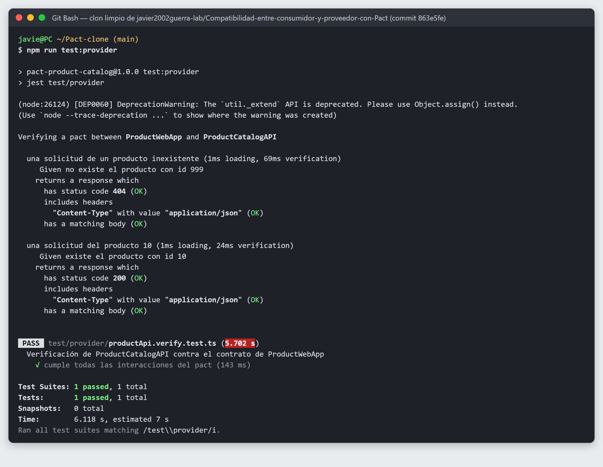
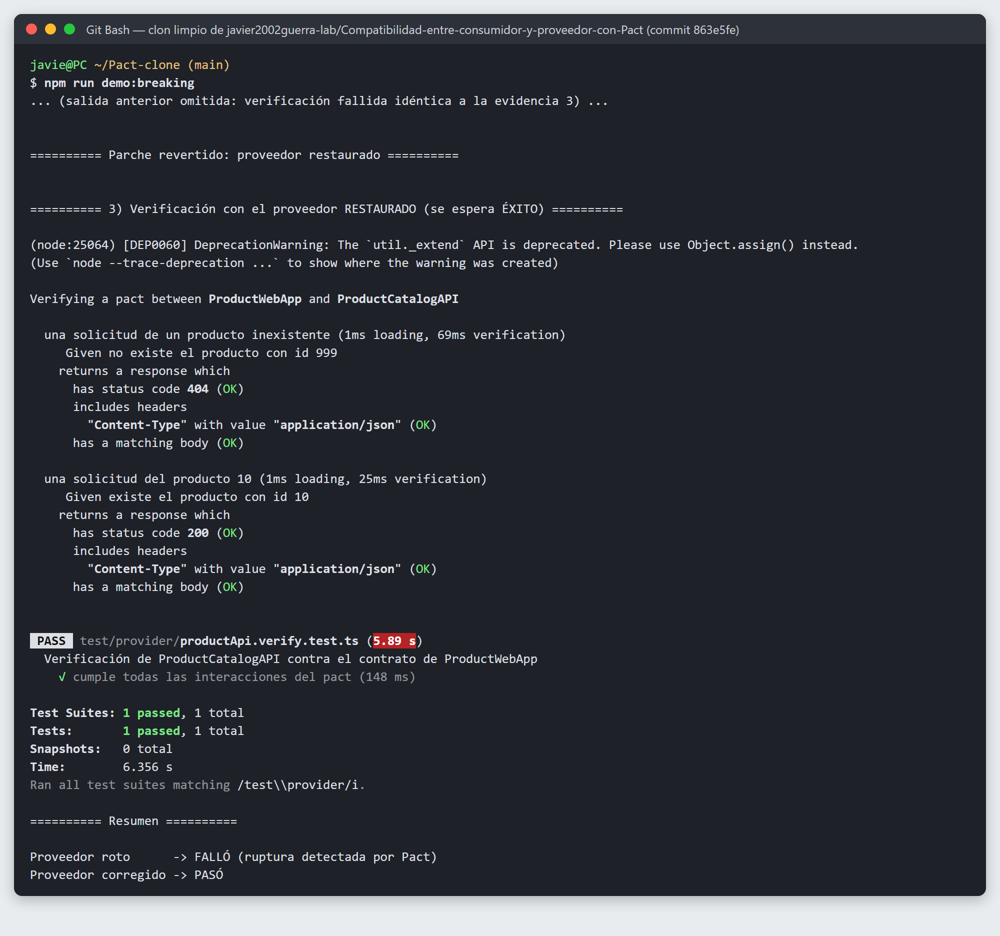

| Autor | Javier Guerra |
| Fecha | 30 de octubre de 2026 |
| Repositorio | github.com/javier2002guerra-lab/Compatibilidad-entre-consumidor-y-proveedor-con-Pact |
| Versión entregada | Etiqueta v1.0.0: …/tree/v1.0.0 Código ejecutado en las capturas: commit 863e5fe |
| Tecnologías | Node.js 22.10.0 · TypeScript 5.9.3 · @pact-foundation/pact 13.2.0 (especificación Pact V4) · Jest 29.7.0 + ts-jest · Express 4.22.3 |
Se implementó un caso pequeño con consumidor y API propios. La aplicación consumidora ProductWebApp muestra la ficha de un producto; para ello su módulo cliente ProductClient llama a la API ProductCatalogAPI con GET /products/:id. La función de aplicación loadProductView() transforma la respuesta en lo que se muestra al usuario.
| Dato que necesita el consumidor | Cómo lo utiliza | Matcher en el contrato |
|---|---|---|
id | Identifica el producto; el cliente exige number | like(10) (tipo) |
name | Título de la ficha | string() |
price | price.toFixed(2) → «49.90 USD»; exige number | like(49.9) (tipo) |
currency | Se concatena en la etiqueta de precio | regex('^[A-Z]{3}$') |
stock | stock > 0 → «En stock» / «Agotado» | like(12) (tipo) |
updatedAt | Se convierte a Date → fecha de última actualización | datetime("yyyy-MM-dd'T'HH:mm:ss.SSSX") |
error (en 404) | Si vale PRODUCT_NOT_FOUND el cliente devuelve null | Valor literal exacto |
message (en 404) | Informativo | string() |
El contrato solo incluye lo que el consumidor usa. Por ejemplo, la respuesta 400 INVALID_ID del proveedor no forma parte del contrato porque el consumidor no la utiliza. Esa regla, como el resto de reglas internas, corresponde a pruebas funcionales del proveedor.
| # | Precondición (estado) | Solicitud | Respuesta esperada | Por qué es relevante para el consumidor |
|---|---|---|---|---|
| 1 | existe el producto con id 10 | GET /products/10Accept: application/json | 200, Content-Type: application/json, cuerpo con id, name, price, currency, stock, updatedAt | Caso exitoso: la ficha necesita todos esos campos con el tipo correcto para formatear precio, disponibilidad y fecha. Se comprueba que el cliente produce {found: true, priceLabel: "49.90 USD", availability: "En stock", lastUpdate: "2026-10-01"}. |
| 2 | no existe el producto con id 999 | GET /products/999Accept: application/json | 404, {"error": "PRODUCT_NOT_FOUND", "message": <texto>} | Caso alternativo que el consumidor debe interpretar: un producto inexistente no es un error de la aplicación. El cliente devuelve null y la ficha muestra «Producto no disponible». Si el proveedor cambiara el código de error o el estado, el consumidor lo trataría como fallo. |
| Fase | Real | Controlado / simulado |
|---|---|---|
| Prueba del consumidor | ProductClient y loadProductView (código de la aplicación), fetch de Node, HTTP | El proveedor, sustituido por el servidor simulado de Pact |
| Verificación del proveedor | Aplicación Express completa (rutas, validación, controlador, serialización JSON) escuchando en un puerto real | ProductRepository en memoria, vaciado y sembrado por los estados; las solicitudes las genera el verificador de Pact |
Estados reproducibles e independientes: el hook beforeEach del Verifier vacía el repositorio antes de cada interacción, y cada state handler construye desde cero los datos que necesita. Por eso el resultado no depende del orden de ejecución: en las capturas el verificador ejecuta primero la interacción 2 y después la 1, y ambas pasan.
price usaba decimal() e id/stock usaban integer(). Al aplicar el cambio incompatible, la verificación pasó igualmente: el core de Pact acepta strings numéricos («49.90», «12») con esos matchers. Como el cliente exige typeof price === 'number', se cambiaron a like(), que compara el tipo JSON. Con ese ajuste Pact detecta la ruptura (evidencia 4).Todas las capturas son de la salida real de la terminal (Git Bash en Windows 11). Se ejecutaron en un clon limpio del repositorio (commit 863e5fe), después de npm ci, siguiendo los comandos del README. Los registros completos están en docs/evidencias/*.log.


npm run test:consumerpacts/ y se ejecutó el cliente real ProductClient y loadProductView contra el servidor simulado de Pact, una vez por interacción.Product con Date y la ficha formateada, y el 404 como null → «Producto no disponible»; y que se genere el archivo de contrato.pacts/ProductWebApp-ProductCatalogAPI.json (especificación V4) con las dos interacciones y sus reglas de matching.
npm run test:providerVerifier preparó cada estado y reprodujo las solicitudes del contrato.Content-Type y cuerpo compatibles en ambas interacciones.
npm run breaking:apply y git diffbreaking-change/price-as-string.patch, que modifica una línea del proveedor: price pasa de number (49.9) a string («49.90»).ProductClient exige typeof price === 'number' para hacer toFixed(2); con un string lanzaría ProductApiError y la ficha no se mostraría.

npm run test:provider con el parche aplicado$.price -> Expected '49.90' (String) to be the same type as 49.9 (Decimal). La interacción del 404 sigue pasando, porque no depende de price.

npm run breaking:revert y git status --short (sin cambios pendientes)
npm run test:provider después de revertir el parchegit status que el árbol de trabajo quedó limpio y se repitió la verificación.
npm run demo:breaking (tramo final; la parte con el fallo es igual a la evidencia 4)scripts/demo-breaking-change.js aplica el parche, verifica, lo revierte siempre (en un bloque finally, también con Ctrl+C) y vuelve a verificar.git clone https://github.com/javier2002guerra-lab/Compatibilidad-entre-consumidor-y-proveedor-con-Pact.git cd Compatibilidad-entre-consumidor-y-proveedor-con-Pact git checkout v1.0.0 npm ci npm run test:consumer # genera pacts/ProductWebApp-ProductCatalogAPI.json npm run test:provider # verifica el contrato contra la API real npm run demo:breaking # ruptura detectada + restauración (o: breaking:apply / breaking:revert)
Requisitos: Node.js ≥ 18 (probado con 22.10.0) y Git. No se necesitan Pact Broker, base de datos, Docker ni credenciales. El README del repositorio detalla versiones, estados y el procedimiento manual.
Se verificaron las dos partes del acuerdo. El consumidor generó el contrato desde sus pruebas, usando el cliente real y comprobando cómo interpreta cada respuesta. El proveedor lo verificó con estados independientes del orden. El cambio de tipo de price produjo un fallo identificable que señala el campo exacto, y al revertirlo la verificación volvió a pasar.
La práctica también mostró que elegir el matcher importa: un matcher que parece más estricto (decimal) no protegía el tipo que el cliente necesita, y el de tipo (like) sí.